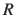
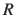

Next: Treatment of periodic boundary Up: Selecting atoms for colvars: Previous: Selection keywords Contents Index
The following options define an automatic calculation of an optimal translation (centerReference) or optimal rotation (rotateReference), that superimposes the positions of this group to a provided set of reference coordinates.
This can allow, for example, to effectively remove from certain colvars the effects of molecular tumbling and of diffusion.
Given the set of atomic positions
 , the colvar
, the colvar  can be defined on a set of roto-translated positions
can be defined on a set of roto-translated positions
 .
.
 is the geometric center of the
is the geometric center of the
 ,  is the optimal rotation matrix to the reference positions and
,  is the optimal rotation matrix to the reference positions and
 is the geometric center of the reference positions.
is the geometric center of the reference positions.
Components that are defined based on pairwise distances are naturally invariant under global roto-translations. Other components are instead affected by global rotations or translations: however, they can be made invariant if they are expressed in the frame of reference of a chosen group of atoms, using the centerReference and rotateReference options. Finally, a few components are defined by convention using a roto-translated frame (e.g. the minimal RMSD): for these components, centerReference and rotateReference are enabled by default. In typical applications, the default settings result in the expected behavior.
# Example: defining a group "atoms", with its coordinates expressed
# on a roto-translated frame of reference defined by a second group
atoms {
psfSegID PROT
atomNameResidueRange CA 41-48
centerReference yes
rotateReference yes
refPositionsGroup {
# define the frame by fitting the rest of the protein
psfSegID PROT PROT
atomNameResidueRange CA 1-40
atomNameResidueRange CA 49-100
}
refPositionsFile all.pdb # can be the entire system
}
The following two options have default values appropriate for the vast majority of applications, and are only provided to support rare, special cases.